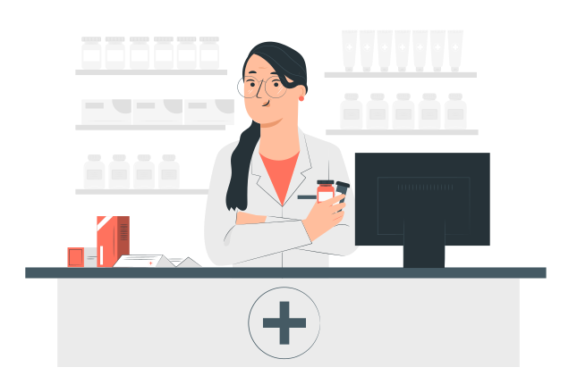

Venha Conhecer a Petebox
A Petebox é o seu refúgio de confiança para o cuidado completo do seu pet. Com mais de 20 anos de mercado e profissionais dedicados e serviços abrangentes, oferecemos uma experiência acolhedora e personalizada, garantindo o bem-estar, a saúde e a felicidade dos seus animais de estimação!
Marque uma consulta Conheça nossa clínica
Clínica Veterinário de Qualidade
Nossa clínica veterinária é o local onde a paixão pelos animais se une à excelência em cuidados veterinários. Sob a liderança do Dr. Leo , uma profissional altamente qualificada e comprometido, oferecemos serviços de saúde e bem-estar para animais de estimação de todas as espécies. Venha conhecer nossa clínica e desfrute da atenção personalizada e do carinho que seu pet merece.
- Consultas de rotina e exames de saúde abrangentes
- Vacinação e imunização
- Cirurgias e procedimentos veterinários
- Odontologia veterinária
- Nutrição e aconselhamento alimentar personalizado
- Atendimento Groomer, especializado

Venha conferir o nosso petshop e farmácia
Além de ser uma clínica veterinária de confiança, também contamos com um completo petshop e farmácia. Nosso petshop oferece uma ampla seleção de produtos de alta qualidade, desde alimentos balanceados e petiscos deliciosos até brinquedos divertidos e acessórios elegantes para o seu pet. Na nossa farmácia, você encontrará uma variedade de medicamentos, produtos de cuidados e suplementos recomendados pelos nossos veterinários, garantindo que o bem-estar e a saúde do seu amado pet estejam sempre em boas mãos. Tudo o que você precisa para cuidar e mimar o seu pet está aqui, no nosso petshop e farmácia, com a mesma dedicação e qualidade que nos tornou referência na área veterinária.

Ficou alguma dúvida?
Quais serviços são oferecidos pela clínica da Petbox?
A clínica da Petebox oferece uma ampla gama de serviços, incluindo consultas de rotina, vacinação, cirurgias, tratamento de doenças, cuidados odontológicos, atendimento de emergência 24 horas, programas de prevenção de pulgas, carrapatos e vermes, entre outros. Nosso objetivo é fornecer cuidados abrangentes e personalizados para garantir a saúde e o bem-estar do seu pet.